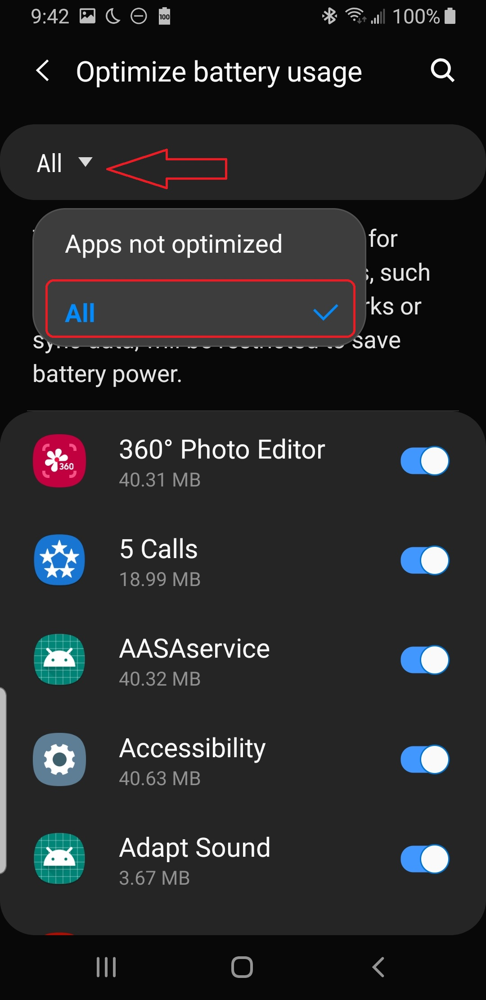

### Put unused apps to sleep
_Phone settings -> Device care -> Tap on the Battery item_ -> (⁝) _3-dot menu > Settings_
Uncheck Your app from this list.
### Auto-disable unused apps
_Phone settings -> Device care -> Tap on the Battery item_ -> (⁝) _3-dot menu > Settings_
Uncheck Your app from this list.
### Background restrictions
Check that _Phone settings -> Apps -> Sleep as Android -> Battery -> Background restriction_ state as **App can use battery in background** for the apps you need to run in the background.
### Sleeping apps
Sleeping apps menu is the sniper's nest for Samsung's app killing policies. Make sure to follow the instructions very carefully to prevent the apps from being killed.
1. Start Device care from phone settings2. Tap Battery3. Tap the 3-dot menu > Settings4. Disable all toggles (except Notifications)5. Tap "Sleeping apps"6. Wake up all the apps using the trashcan icon
On some phones, the layout may differ:
1. Start Device care from phone settings. 2. Tap Battery. 3. Open App power management. 4. Disable the option Put unused apps to Sleep . 5. Remove your app from the lists in Sleeping apps and Deep sleeping apps. 6. Add you app to the list in Apps that won't be put to sleep.
Warning: Make sure Put unused apps to sleep and Auto-disable unused apps is disabled. Otherwise, Samsung will put your apps back to sleep after a few days (3 by default) even if you have woken them up manually!
### Optimize battery usage
Battery optimizations are hidden under each app's settings section. To disable the optimization for the app, you need to expand the sub-menu, so the list reveals the apps, that are restricted.
Open _System settings -> Apps -> Your app -> Optimize battery usage_, expand the list, and then set the app to "not optimized" with the toggle.
1. Optimize battery usage.

2. Expand the list.